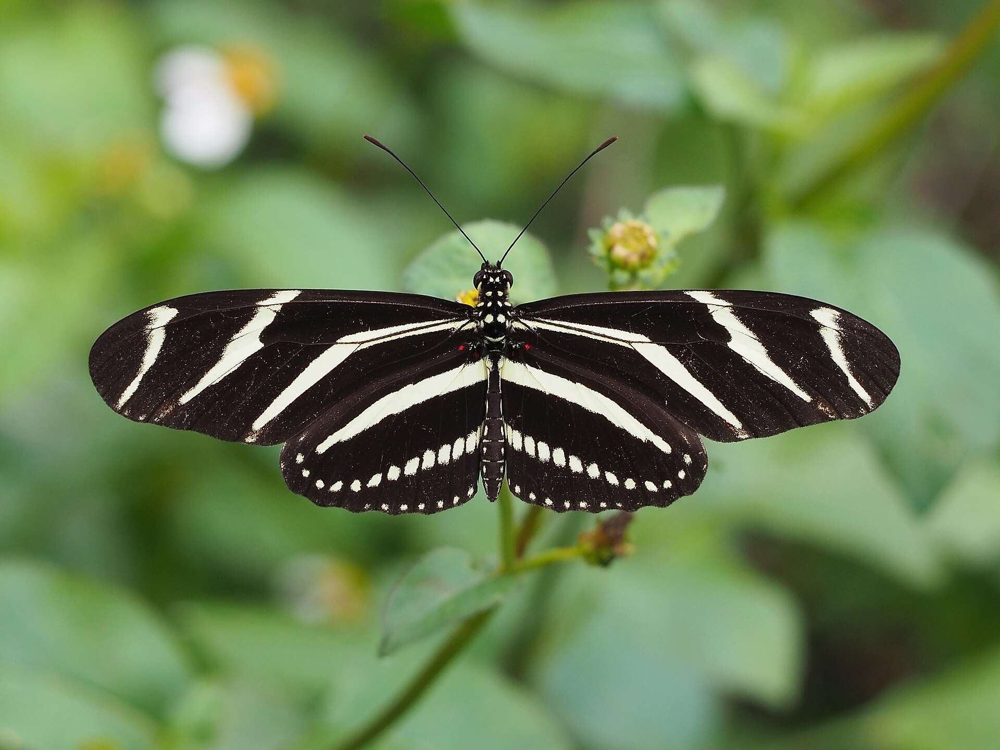
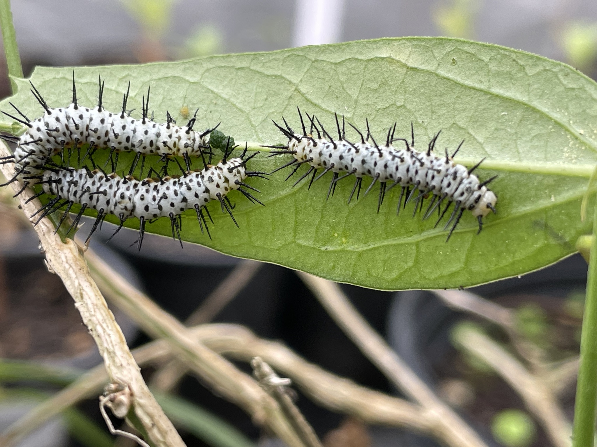

Heliconius charithonia
Common nowFlorida’s state butterfly, and a year-round Cape Coral resident. Passionvine again. They live for months, take pollen as well as nectar, and roost together at night, so a yard that has them in August often still has them in September.

Yards, hammock edges, parks, shrubby thickets.
Purple passionflower / maypop
Passiflora incarnataCorkystem passionflower
Passiflora suberosaYellow passionflower
Passiflora luteaZebra Longwing has elongate black wings with narrow yellow stripes. Zebra Swallowtail is striped but has tails and is not black-ground.